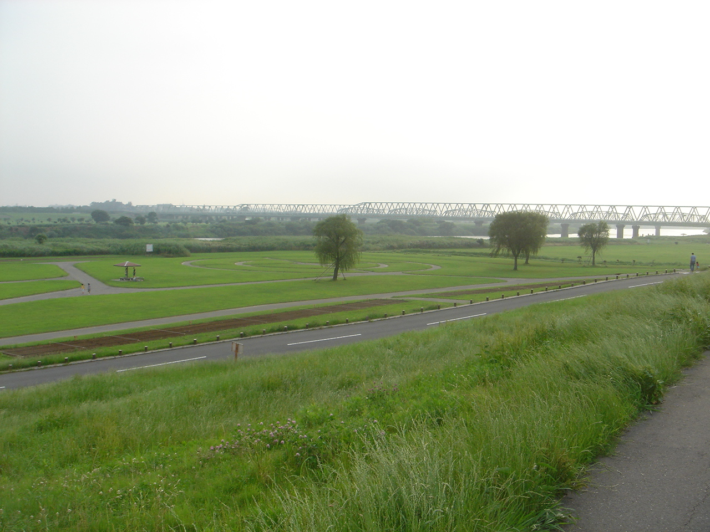

市内の施設、自然


アビスタ
アビスタ（我孫子市生涯学習センター）は市民の憩いの場です。 手賀沼公園の中にあり、図書館も併設されています。 また、屋上からは手賀沼が一望できます。

水の館
屋外には親水広場やじゃぶじゃぶ池、屋内にはプラネタリウムや農産物直売所、レストランがあります。 建物を登ると素晴らしい景色が見られます。

鳥の博物館
日本で唯一の「鳥類専門」の博物館。 入館料300円でたっぷり楽しめます。 鳥の標本数は、日本一でなんと3000体ほど。常設展示から、企画展、鳥グッズの販売、体験コーナーなど。子供から大人まで楽しめます。

手賀沼
我孫子市のシンボルである手賀沼。 数年前までは日本で一番汚い沼でしたが、現在はその汚名を返上し、水質改善に取り組んでいます。夏には花火大会が開催されます。

利根川
手賀沼と対をなして我孫子市を挟む川、利根川。 流域面積は日本で一番大きく、川の長さも信濃川に続いて日本で二番目です。